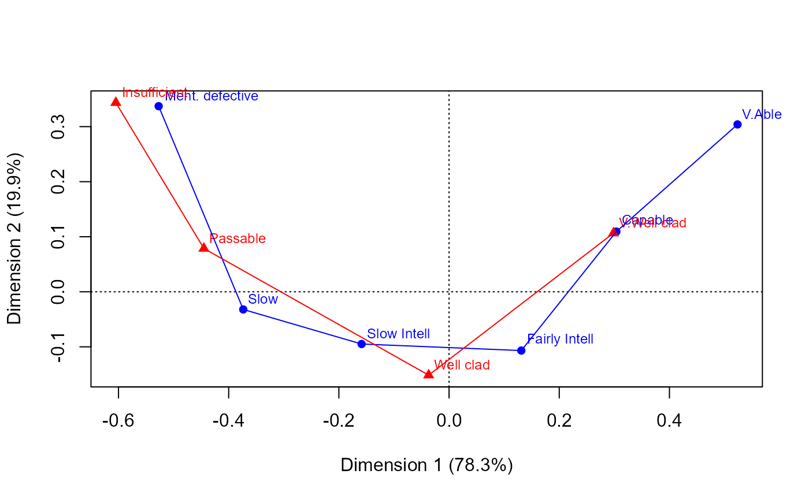

Clothing and Intelligence Rating of Children
Gilby.RdSchoolboys were classified according to their clothing and to their teachers rating of "dullness" (lack of intelligence), in a 5 x 7 table originally from Gilby (1911). Anscombe (1981) presents a slightly collapsed 4 x 6 table, used here, where the last two categories of clothing were pooled as were the first two categories of dullness due to small counts.
Both Dullness and Clothing are ordered categories, so models and methods
that examine their association in terms of ordinal categories are profitable.
Usage
data(Gilby)Format
A 2-dimensional array resulting from cross-tabulating 2 variables for 1725 observations. The variable names and their levels are:
| No | Name | Levels |
| 1 | Dullness | "Ment. defective", "Slow", "Slow Intell", "Fairly Intell", "Capable", "V.Able" |
| 2 | Clothing | "V.Well clad", "Well clad", "Passable", "Insufficient" |
Source
Anscombe, F. J. (1981). Computing in Statistical Science Through APL. New York: Springer-Verlag, p. 302
References
Gilby, W. H. (1911). On the significance of the teacher's appreciation of general intelligence. Biometrika, 8, 93-108 (esp. p. 94). [Quoted by Kendall (1943,..., 1953) Table 13.1, p 320.]
Examples
data(Gilby)
# CMH tests treating row/column variables as ordinal
CMHtest(Gilby)
#> Cochran-Mantel-Haenszel Statistics for Dullness by Clothing
#>
#> AltHypothesis Chisq Df Prob
#> cor Nonzero correlation 133.21 1 8.1410e-31
#> rmeans Row mean scores differ 134.79 5 2.2915e-27
#> cmeans Col mean scores differ 135.22 3 4.0462e-29
#> general General association 174.72 15 2.7516e-29
#>
mosaic(Gilby, shade=TRUE)
# correspondence analysis to see relations among categories
if(require(ca)){
ca(Gilby)
plot(ca(Gilby), lines=TRUE)
}
